吊耳
極厚熱軋中鋼產 12mm 中碳鋼板切割沖孔焊做而成，可承受結構本體吊重，及做為高架屋頂荷重之基礎延伸點。
PRODUCT & STRUCTURE
從結構分層、生產流程、與貨櫃屋的差異，到預算範圍參考，認識一個空間如何成形。
STRUCTURE / MATERIAL NOTES

極厚熱軋中鋼產 12mm 中碳鋼板切割沖孔焊做而成，可承受結構本體吊重，及做為高架屋頂荷重之基礎延伸點。
輕質砂漿即摻入避水漿做本質防水。表面做不織布全舖設一道、亞克力樹脂底塗二道、彈泥中塗三道、二氧化鈦隔熱面塗二道。
全平面一體成型。可供人行走、放置重物、向上堆疊、附屬加工。做為空中觀景平台、植栽綠屋頂等用途使用。
一體成型矩型鋼管焊做而成，支撐結構不變型、不彎曲、不下陷。
集中雨水做妥善引導集中排放，可設計製做雨水回收工程。
充裕的夾層空間做妥善的佈線配管工作。
採用大口徑一體成型方型鋼管裁切焊接而成。
有效隔離地氣、防止結構受潮、降低室內溼度。
採用線徑最粗、孔距最小之鋼筋點焊網，輔以 9mm 竹節鋼筋，舖設而成。
採用一號卜特蘭水泥（亞洲水泥）混合輕質發泡配比而成，具有質輕抗熱、堅硬耐壓等永久性表現效果。
採用南寶強力膠雙面施工，較一般地板專用單面膠工法，具有黏合程度更高、完全拒水、冷縮熱脹程度低的優點。
常規使用 2mm 立體木紋塑膠地板，具有清潔易、耗損少、質感好、造價低的優點。
PU 發泡覆著於鋼板背層，具有增加表面鋼板硬度、取得基本隔音隔熱效果的優點。
色系眾多，可依風格做任何挑選搭配。鍍 55% 鋁鋅鋼材經久耐用；內外牆設計成各自獨立，受損需更換板材時，不會相互影響。
採 LVL 積層角料，經蒸、煮、浸、悶、凍之物理試驗過程，克服傳統木材含水含糖量高所導致的易彎曲變型及遭受蟲蛀的缺點。
依特別需求，可於夾層加填充防火棉、隔音毯、酚醛板、保麗龍、硬質發泡等隔音熱素材。
本頁案例所示工法、結構配置及用料僅為展示示意。實際施工時，將依現場環境條件、結構安全、材料供應及相關法規等因素，由本公司專業技術團隊進行評估與最適化調整。為確保施工品質與安全，若有調整或改良之處，皆屬專業判斷下之合理差異，恕不另行通知，敬請理解。
02 / PRODUCTION

主結構鋼管使用無氣噴漆機上漆，逐次增加單層噴塗厚度，以暗紅的底漆做為鋼材與面漆的覆著中介，達到防銹的目的。

以精密的帶鋸機取代傳統砂輪切斷機，鋼材以精準的各種角度裁取；精確的裁角能使鋼管間毫無誤差的接合。
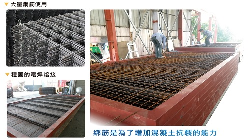
綁筋是為增加混凝土抗裂的能力。上下平面框使用大量鋼筋以穩固的電焊熔接，高密度的綁筋間距使框面倍加穩固。

以輕質發泡配比取代傳統混凝土中的砂石配比，環保又兼具隔熱效果。

引進 CO2 半自動電焊機，取代傳統電焊機對於焊道張力、滲透力及填補效率不足等缺點；綿密的焊道就是結構穩固的保證。

底部噴塗柏油防潮，樑柱噴塗調合漆防鏽，屋頂塗佈多道彈性塗料防滲水，全方位提高整體結構的耐久性。

擁有各式門窗型、各種玻璃及各色粉體烤漆供給選用。
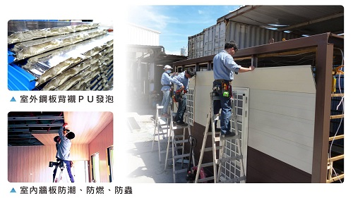
選用鍍 55% 鋁鋅烤漆鋼板做為外牆板，後襯 PU 發泡層具有基本隔熱效果；內牆採 PVC 覆膜板，具有防焰、防水、美觀、耐髒、易清潔等優點。

水電材料皆使用國內 CNS 認證知名品牌。熱水管件採用彰源 #304 不銹鋼管，確保管件線路安全及長久使用。
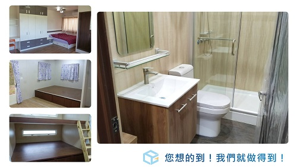
具備極佳的客製化能力，一切可依業主需求加以製做；客廳、廚房、浴室、臥房、系統木櫃等，您想的到，我們就做的到。
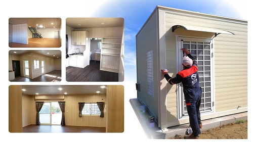
盡可能消除施工過程所產生的汙漬及瑕疵，使物品完好的交付。

載運超尺寸物品，運輸是過程中最困難的一個環節。因此車趟皆配有助手、專車親送，將過程中受損害的風險降到最低；隨車附贈高壓實心磚做簡易離地墊高之用。

整地農路、舖面灌漿作業、鐵工大門圍籬、水電管路作業、景觀工程作業等現地工程，皆可一條龍式統包服務。
本頁案例所示工法、結構配置及用料僅為展示示意。實際施工時，將依現場環境條件、結構安全、材料供應及相關法規等因素，由本公司專業技術團隊進行評估與最適化調整。為確保施工品質與安全，若有調整或改良之處，皆屬專業判斷下之合理差異，恕不另行通知，敬請理解。
03 / DIFFERENCE
易立構努力研發各種迥異於以往的款式與色樣，可依個別需求完全客製化，使其充滿特色與生命力，讓您擁有一間與眾不同的小屋。以下以 10 個結構與使用面向，逐一比較易立構與貨櫃屋的差異。
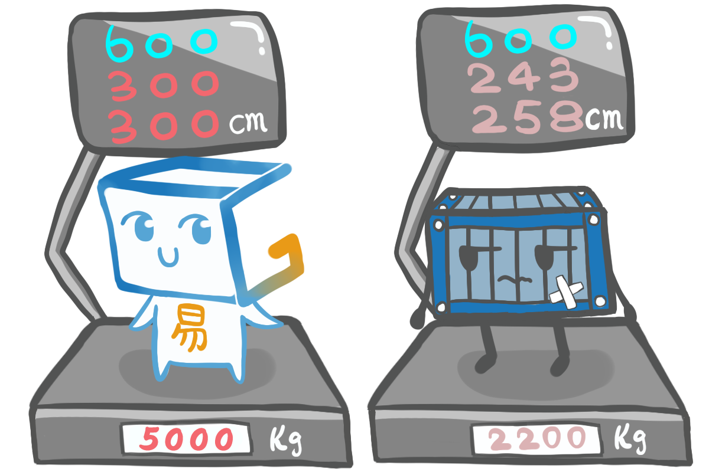
01易立構較貨櫃尺寸加寬而挑高。不感壓迫、不易悶熱。
 02
02貨櫃為船公司使用後報廢，其本質為「裝貨」而非「居住」。曾裝載過何種物品（如放射性、油質、不明化學物質）無法追溯查證。全新的易立構則無此疑慮。
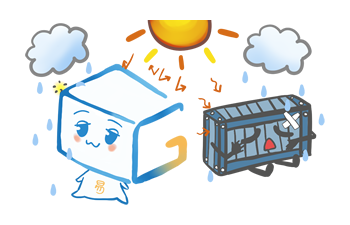
03易立構全結構以輕質水泥及發泡鋼板包覆，配合自然排熱設計，具有良好的保溫效果。貨櫃為單層鋼板，鋼板表面溫度極高，室內則動輒攝氏 50 多度。
 04
04貨櫃表漆為一般噴塗，無法長久。易立構表層為高溫烤漆鋼板，具有良好的抗候性。
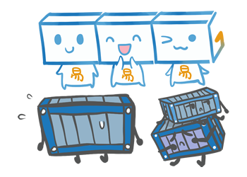
05貨櫃無結構框，經大面積切割後會使頂板下陷，需將其扳正並補強，浪費工本及鋼材。易立構則為結構框的型式，無切割補強的問題。
 06
06貨櫃為浪型邊板，一經切割便會捲曲變型，門窗安裝及室內裝潢沒有標準，因時而異、狀況不一。易立構則於生產線上統一標準製作。
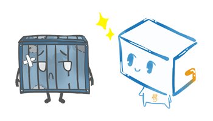
07貨櫃為船公司使用後報廢淘汰，補釘凹陷實屬平常。易立構為全新鋼板、全新外裝。
 08
08貨櫃地板為木板，有受潮腐爛、老鼠打洞、白蟻啃蝕等缺點。易立構為鋼筋混凝土，無耗損問題。為符合海運承重需求，貨櫃地板使用 19 層、28mm 的高壓防水夾板；如此高規地板尚可能因時異地壞損，一般輕鋼構組合屋使用的普通 15–18mm 防水夾板更難長久使用。
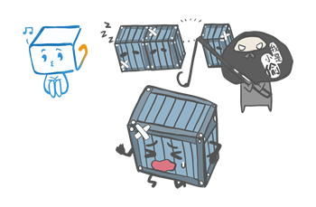
09貨櫃屋沒有特色，門窗用料及位置大同小異，常有整體被吊竊情事發生。易立構為全新訂製、深具特色，不易成為竊賊目標。
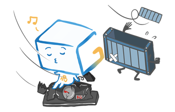
10貨櫃屋常態重量為 2200KG，受風常有位移、翻覆情事發生。易立構常態重量約 4500KG，抗風能力相對優異。
04 / BUDGET
依過往個案彙整的預算區間，作為初步溝通的參考；並非定型商品或正式報價，實際金額需經場勘與需求確認後提供。
小坪數、簡易格局，工寮、農用小屋、簡易套房等基本機能空間。


格局較完整，可納入衛浴、廚房與多房配置的住宅或休憩空間。

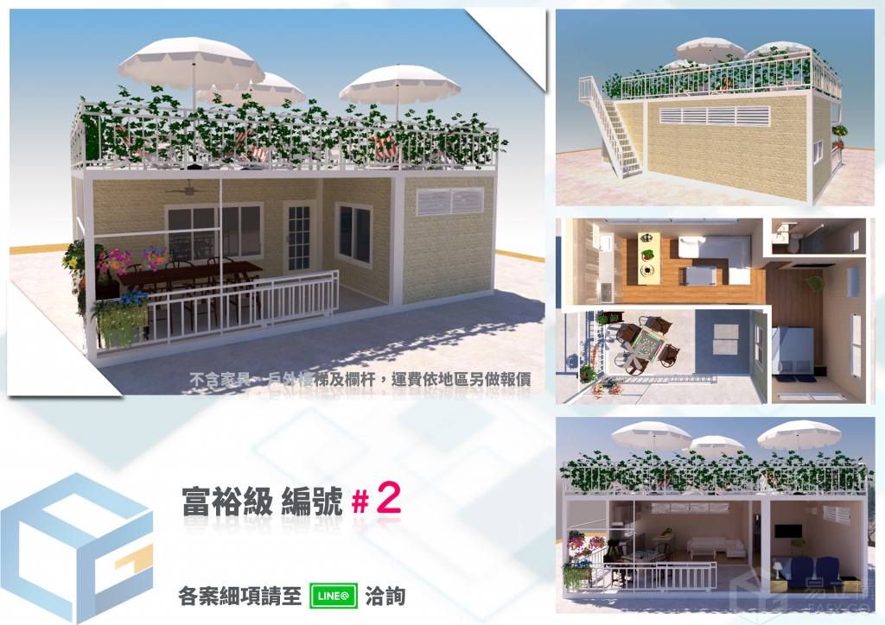

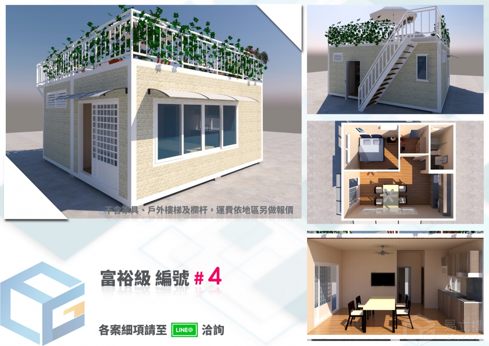


坪數與規格更具彈性，外觀、內裝與機能可依需求深度客製化。

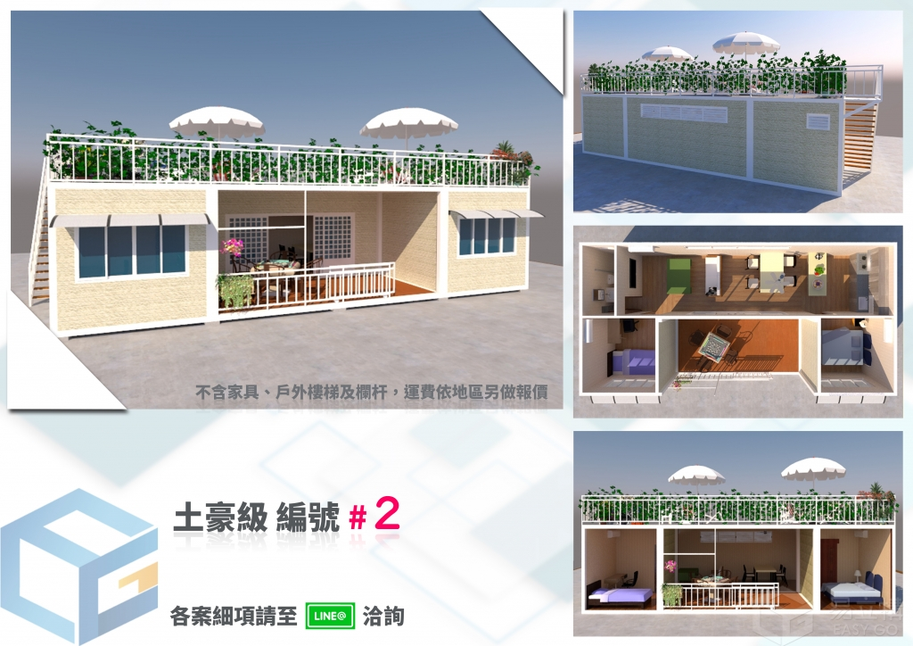
以上為過往案例彙整之預算區間參考，非定型商品或正式報價。實際金額需納入本體、基礎、運輸吊裝、水電及裝修，經場勘與需求確認後提供。
從構件到交付範圍，確認每一份報價真正包含什麼。
START WITH A CONVERSATION